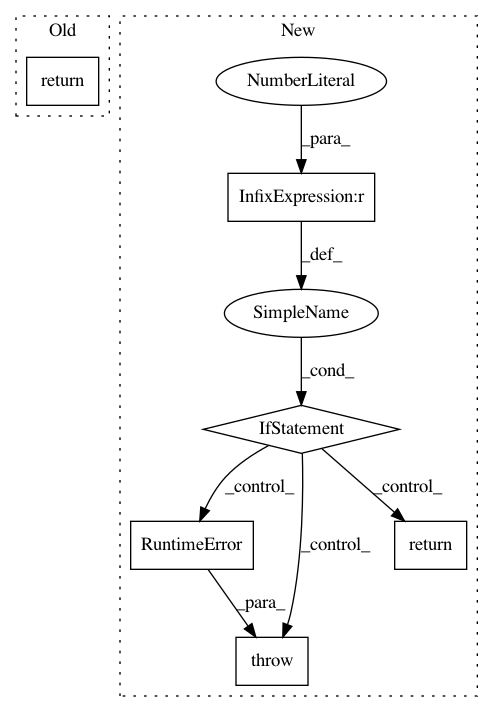

57c4306d9282b8d3fc815336c86c7af64f75a756,GPy/plotting/gpy_plot/gp_plots.py,,_plot_confidence,#,150
Before Change
update_not_existing_kwargs(kwargs, pl.defaults.confidence_interval)
_, percs = helper_predict_with_model(self, Xgrid, plot_raw, apply_link, (lower, upper), which_data_ycols, **predict_kw)
return dict(gpconfidence=pl.fill_between(canvas, Xgrid, percs[0], percs[1], **kwargs))
After Change
update_not_existing_kwargs(kwargs, pl.defaults.confidence_interval)
if len(free_dims)<=1:
if len(free_dims)==1:
_, percs = helper_predict_with_model(self, Xgrid, plot_raw, apply_link,
(lower, upper),
ycols, predict_kw)
fills = []
for d in ycols:
fills.append(pl.fill_between(canvas, Xgrid[:,free_dims[0]], percs[0][:,d], percs[1][:,d], **kwargs))
return dict(gpconfidence=fills)
else:
pass //Nothing to plot!
else:
raise RuntimeError("Can only plot confidence interval in one input dimension")
def plot_density(self, plot_limits=None, fixed_inputs=None,
resolution=None, plot_raw=False,
apply_link=False,
which_data_ycols="all",
In pattern: SUPERPATTERN
Frequency: 3
Non-data size: 6
Instances
Project Name: SheffieldML/GPy
Commit Name: 57c4306d9282b8d3fc815336c86c7af64f75a756
Time: 2015-10-03
Author: ibinbei@gmail.com
File Name: GPy/plotting/gpy_plot/gp_plots.py
Class Name:
Method Name: _plot_confidence
Project Name: chainer/chainer
Commit Name: 75231a39c212fc8066f99633698b7e59b2ce4efb
Time: 2019-10-13
Author: duaipp@gmail.com
File Name: onnx_chainer/onnx_helper.py
Class Name:
Method Name: is_support_non_standard_domain
Project Name: statsmodels/statsmodels
Commit Name: 5e754486a00d5e6380d5183c2b2ffc6ff6ee02c0
Time: 2019-11-28
Author: padarn@gmail.com
File Name: statsmodels/nonparametric/bandwidths.py
Class Name:
Method Name: select_bandwidth